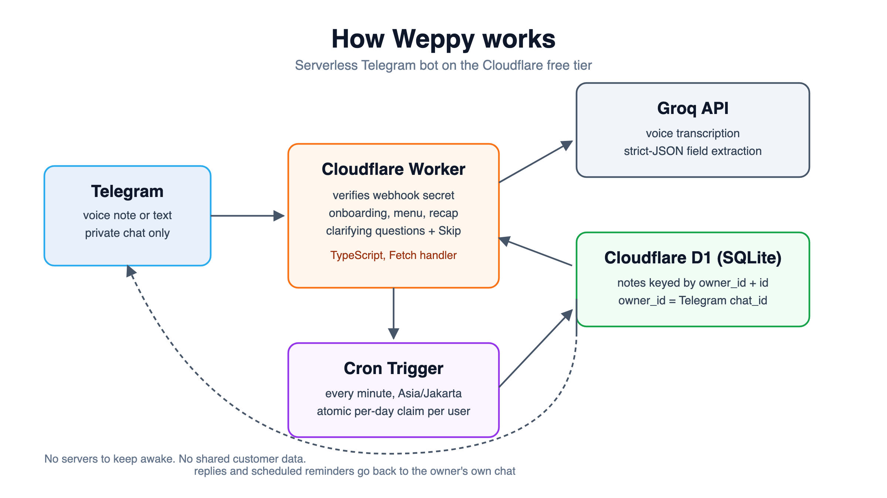
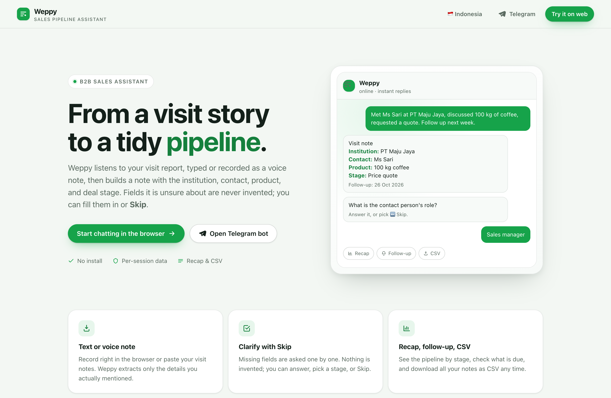
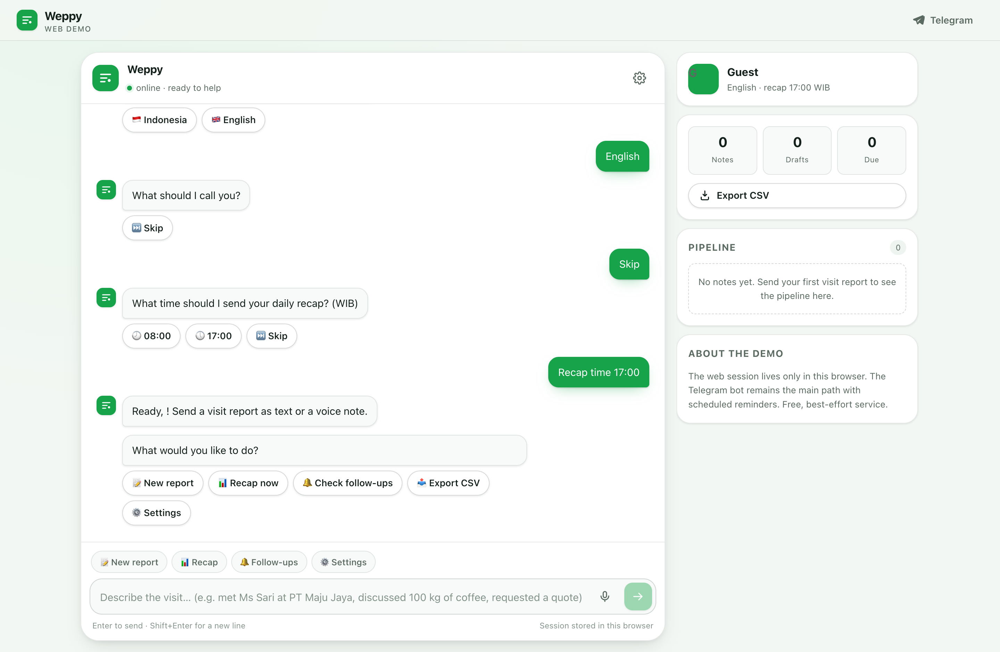

A capture-first alternative to manual CRM entry — and what happens when an AI agent is allowed to say “I don’t know.”
B2B sales representatives routinely postpone documenting client visits, and conventional CRM data entry turns that delay into lost detail, stale pipelines, and missed follow-ups. This paper presents Weppy, a conversational agent that inverts the workflow: instead of filling a form, the representative tells the story of a visit by text or voice note, and the agent extracts a structured four-field pipeline record — institution, contact and role, product or service, and deal stage. The central design commitment is capture without fabrication: any field the agent cannot ground in the message is left explicitly empty and requested one at a time with a Skip option, rather than guessed. We frame the problem as an information-fidelity agent whose objective is to maximize grounded, user-confirmed capture per unit of effort under a hard constraint of zero fabrication, and we implement it as a single TypeScript Cloudflare Worker with D1 storage, one shared engine serving both Telegram and a browser client, and structural per-owner data isolation. We report a formative evaluation — an automated suite of 21/21 passing tests covering owner isolation and concurrent scheduling, and a measured comparison of the production extraction model against two third-party alternatives — and a controlled evaluation plan (a counterbalanced within-subjects study) to test the framework’s predictions about completeness, fabrication, and effort.
B2B field sales is a day of movement: a representative drives between client sites, spends forty minutes in a meeting, and is already thinking about the next stop before the car door closes. The five minutes immediately after a visit — while names, quantities, objections, and promises are still fresh — is precisely the moment when almost nobody writes anything down. The administrative task is deferred to the evening, the evening is full, and the details decay. The result is a familiar failure chain: deferred notes → forgotten detail → missed follow-up → stalled deal → a pipeline that no longer reflects reality.
The conventional remedy is a Customer Relationship Management (CRM) system. But a CRM is, at the moment of capture, a form: a grid of required fields presented to a person who is tired, in transit, and holding a phone in one hand. The form demands exactly the structured information the representative does not yet have time to organize. Salespeople respond rationally — they avoid it. The pipeline goes stale not because reps are careless but because the tool asks them to do clerical work at the worst possible moment. This paper treats that mismatch, rather than any individual behavior, as the problem to solve.
The scale of the loss is well documented. Salesforce’s State of Sales survey of 7,775 sales professionals across 38 countries found that reps spend only 28% of their week actually selling, with the majority of remaining time consumed by deal management and data entry; 66% report being overwhelmed by the number of tools they must use (Salesforce, 2022). Forrester’s sales-activity research estimates the average rep wastes roughly 14 of 51 working hours each week on administrative tasks — about two working days (Forrester, n.d.). Every hour reclaimed from paperwork is an hour available for revenue-generating conversation, and every record captured at the point of the visit is a record that survives to inform forecasting and follow-up.
The stakes are not only economic but epistemic. A CRM exists to answer questions — what is in the pipeline, what is due, what did we promise? — and it can only answer them if the underlying records are complete and trustworthy. Incomplete records distort forecasts; fabricated or guessed records are worse, because they silently inject falsehoods that later decisions treat as fact. For a mobile-first market such as Indonesia, where much field communication already happens through voice and messaging apps, the gap is sharper still: typing a long form on a phone is slow (speech dictation is roughly three times faster than mobile typing; Ruan et al., 2016), so the medium that is easiest to use — voice — is the one the CRM cannot accept.
We formalize the task as follows. A visit is described by a free-form utterance u, delivered as text or as a voice note that is first transcribed. The goal is to produce a structured record
R = {institution, contact, role, product, stage, follow-up date}
subject to three coupled requirements: (P1) extraction fidelity — every populated field must be grounded in u or in a later user confirmation, and unmentioned fields must remain visibly empty rather than invented; (P2) minimal-burden disambiguation — the system should ask only for what is missing, one item at a time, and must always allow the user to abstain; and (P3) ownership integrity — the record must be durably stored and readable only by the account that created it, with reminders delivered back to that same owner.
This work targets the individual representative’s capture-and-follow-up loop. It is deliberately not a full CRM: it excludes team sharing, lead scoring, price recommendation, and closing prediction. The public artifact is a best-effort, zero-cost service on free tiers, and the paper is explicit that this implies no uptime guarantee, no managed backups, and no production SLA — an honesty constraint we treat as part of the design, not a disclaimer bolted on afterward.
Research on sales force automation (SFA) has long documented that the binding constraint is adoption, not features. Speier and Venkatesh (2002) identify the “hidden minefields” of SFA adoption, showing that systems which increase perceived effort or reduce flexibility are resisted even when mandated. Bush, Moore, and Rocco (2005) report SFA implementation failure rates as high as 55–80% and attribute failure largely to managerial and usability factors rather than to technology gaps. The recurring lesson across this literature is blunt: a tool that adds work gets abandoned. Any credible solution must therefore reduce the effort of capture, not formalize it more aggressively.
Industry research quantifies the burden that motivates the problem. Salesforce’s multi-country State of Sales study (2022) places selling time at 28% of the week and highlights data entry and tool sprawl as primary drains; Forrester’s activity studies estimate roughly two days per week lost to administration (Forrester, n.d.). These figures are correlational and vendor-sponsored, and should be read as order-of-magnitude evidence rather than precise measurements, but they converge on a consistent conclusion: post-visit administration is a large, recurring, and widely resented cost.
If capture must be effortless, voice is an obvious channel. Ruan, Wobbrock, Liou, Ng, and Landay (2016) found that speech dictation was about three times faster than typing for both English and Mandarin text entry on mobile devices, and more accurate after correction. Yet voice input is not automatically usable: a recent field study of hands-free, eyes-free voice input for nursing records found real barriers around accuracy, integration into existing record systems, and clinician trust (Nishida et al., 2026). The lesson for our design is that voice capture is viable only when paired with a forgiving, editable, and honest interface that surfaces uncertainty instead of hiding it.
Large language models have become strong zero- and few-shot information extractors. Xu et al. (2024) survey generative information extraction and show that LLMs handle schema-guided extraction impressively but are prone to schema drift, inconsistent formatting, and unsupported “fill-in” of missing slots. The practical implication is that a production extractor needs more than a good prompt: it needs a strict output contract (JSON mode), schema validation, and an explicit policy for absent information. This is precisely the engineering layer that separates a demo from a dependable record-keeping tool.
Hallucination — fluent output unsupported by the source — is the central risk for any system that writes records on a user’s behalf. Ji et al. (2023) provide a widely used taxonomy distinguishing intrinsic hallucination (output contradicting the source) from extrinsic hallucination (output adding unsupported content). Koenecke, Choi, Mei, Schellmann, and Sloane (2024), in Careless Whisper, demonstrate that speech-to-text systems hallucinate even on silence and noise, and that a substantial fraction of these fabrications carry explicit harms. In our own measurements (Section 4.4) the production Whisper model transcribed three seconds of silence as the word “you” — a small but concrete instance of the phenomenon. The design response is direct: treat transcription as untrusted, never let a blank become an invented value, and make the system prefer an honest empty field to a confident guess.
When information is missing, the right move is to ask — but which question, and in what order? Rao and Daumé III (2018) formalize clarification-question ranking using the neural expected value of perfect information: prefer the question whose answer most reduces uncertainty. Weppy does not learn a ranking; it uses a deterministic, ordered clarification policy that asks for the highest-value missing fields first and always offers abstention. The framing nonetheless matches: clarification is treated as an information-acquisition problem with a cost, not as a checklist to be completed by force.
Modern speech recognition rests on large-scale weakly supervised training. Radford et al. (2023) introduced Whisper, whose robustness across accents, noise, and languages made high-quality transcription a commodity API; Weppy uses whisper-large-v3 for this role. For extraction, Weppy uses an open-weight reasoning model, gpt-oss-20b, whose model card documents its architecture, training, and safety posture (OpenAI, 2025). Using open-weight models keeps cost at zero on free tiers while allowing a strict JSON contract.
The literatures above study CRM failure, the cost of non-selling time, voice capture, LLM extraction, hallucination, and clarification largely in isolation. Few systems combine them into a single capture-first workflow whose explicit design objective is grounded completeness with abstention, enforced under strict per-owner isolation on a zero-cost serverless deployment — and fewer still report measured extraction reliability across providers as part of the design argument. Weppy contributes (i) an integrated design and theoretical framing, (ii) a working, publicly accessible implementation with structural privacy, and (iii) a measured reliability study plus a controlled evaluation plan.
Weppy’s thesis is a single sentence: let the representative tell the story, and let the agent do the paperwork — without ever inventing a fact. A rep sends a text or voice note after a visit (“Visited PT Nusantara Foods today, met procurement manager Budi Santoso, discussed the 200 kg monthly coffee contract, they want pricing by Friday”). The agent transcribes if needed, extracts the four pipeline fields, and returns a scannable card. Any field it cannot ground is shown as explicitly not set and requested one at a time, each with a Skip button. Once saved, the agent computes a follow-up date, sends reminders and a daily recap at the user’s chosen time, and can export the whole pipeline as CSV. The entire interaction lives in the messaging medium the rep already uses, so capture costs a sentence instead of a form.
We model the system as an Information-Fidelity Agent (IFA) and define four quantities over a visit record with n required fields:
The framework’s central claim is that record-keeping is not a symmetric trade-off between completeness and speed. It is a constrained optimization:
maximize C subject to F ≤ ε and E ≤ Emax, with I = 1
with ε set to zero in principle. The rationale is asymmetric recoverability: a blank is recoverable; a false value is not. A blank invites a clarification question or a Skip, and the record remains honest. A fabricated value looks identical to a true one, propagates silently into recaps and forecasts, and is discovered — if ever — only after a decision has been made on it. This is why fidelity is modeled as a hard constraint rather than a quantity to trade against speed, and it is the theoretical reason the product refuses to “helpfully” fill gaps.
Operationally, the framework is a per-owner state machine that cycles through six stages: (1) input (text or voice) → (2) transcription (untrusted) → (3) grounded extraction into a strict JSON schema → (4) card rendering with explicit blanks → (5) clarification loop (one missing field per turn, always with Skip) → (6) persistence and scheduling (follow-up, recap, CSV). Each transition either increases grounded completeness or leaves it unchanged; no transition may increase fabrication. This invariant — the only path from blank to filled is grounding or explicit user confirmation — is the mechanism by which the theoretical constraint F ≤ ε is enforced in code rather than merely promised in a prompt. Figure 1 shows the deployed architecture that realizes this loop across two transports.
| Principle | What it means in Weppy | Grounded in |
|---|---|---|
| Ground, don’t guess | Strict-JSON prompt told to leave unknown fields blank; UI shows “not set.” | Ji et al. (2023); Koenecke et al. (2024); Xu et al. (2024) |
| Ask minimally, allow Skip | One missing field per turn, ordered by value, with an always-available Skip. | Rao & Daumé III (2018); Speier & Venkatesh (2002) |
| Capture in the native medium | Voice and chat, not a form; voice recording in browser and Telegram. | Ruan et al. (2016); Nishida et al. (2026) |
| Structural privacy | Composite key (owner_id, id); a bare note ID never authorizes access. | Security engineering practice |
| Honest limits | README and UI state best-effort free-tier behavior; no fake uptime claims. | Research-ethics practice |
| Idempotent delivery | Atomic per-owner/per-date D1 claim prevents duplicate reminders under overlapping cron. | Distributed-systems practice |
Per the submission criteria, this section takes the Implementation Plan route — describing the system actually built, the tools and methods, and how it is operated — and additionally reports a formative reliability study already run, plus a controlled experimental design that the framework predicts will validate H1–H3.
Weppy is a single TypeScript Cloudflare Worker (src/worker.ts) that serves three surfaces from one deployment: the Telegram webhook, a JSON web API (/api/session, /api/message, /api/voice, /api/export), and the static browser client in public/. A single transport-agnostic conversation engine (src/chat.ts) drives both Telegram and the web app, so behavior cannot drift between the two. Persistence is Cloudflare D1 (SQLite); model calls go to Groq for transcription and extraction; a Cron Trigger runs every minute and evaluates each user’s schedule in Asia/Jakarta. No server needs to stay awake, and there is no build step for the client.

The schema makes privacy structural rather than procedural. Notes use a composite primary key PRIMARY KEY(owner_id, id), and every note query includes owner_id; a foreign note ID is simply “not found.” Telegram owners are keyed by private chat_id; web owners are namespaced web:<token> so they can never collide with a numeric chat ID, and the Cron sender skips web:% owners because a browser session cannot receive a push. A separate processed_updates table claims each Telegram update_id once to make webhook retries idempotent, and an atomic conditional update on last_recap_date/last_followup_date guarantees that overlapping Cron invocations cannot send a duplicate recap or reminder.
The stack is deliberately small and reproducible: TypeScript on Cloudflare Workers; Cloudflare D1 for storage; the Telegram Bot API and a static browser client for transport; Groq (whisper-large-v3 for speech, gpt-oss-20b for extraction); Wrangler for deployment; and Vitest with the @cloudflare/vitest-plugin for tests against a real D1 emulation. Secrets are stored as Cloudflare secrets and never committed. The public artifact runs entirely on free tiers, with the honest caveat that free quotas can interrupt service.
The implementation was exercised end to end. The automated suite comprises 21 tests across three files, all passing, covering: webhook-secret rejection; rejection of another account and of a foreign note-ID callback; web-session isolation between two sessions; the full onboarding → report → clarification → recap path; localized CSV export scoped to the session owner; voice-upload transcription and storage; and concurrent Cron claims proving at most one scheduled recap per owner per date (plus a separate test that reminder and recap claims are tracked independently). Type checking passes, and the deployed web app and landing page return HTTP 200. The public artifact is live at the URL on the cover.
Because the theoretical constraint F ≤ ε depends on the extractor actually returning grounded, schema-valid records, we ran a measured comparison of the production model against two third-party extraction endpoints before committing to it. Using the production prompt unchanged (temperature 0, max_tokens 500, response_format: json_object) over a fixture set of 16 distinct scenarios plus repeats — including complete, incomplete, and fact-free reports; English, Indonesian, and mixed input; relative and explicit dates; corrections; negated deals; and untrusted quoted instructions — we recorded HTTP status, raw JSON validity, schema-and-value agreement, and latency.
| Provider / label | Trials | HTTP 200 | Raw valid JSON | Schema + value | Field accuracy | Median | P95 |
|---|---|---|---|---|---|---|---|
| Groq · gpt-oss-20b (production) | 20 | 20/20 | 20/20 | 20/20 | 120/120 | 0.82 s | 0.92 s |
| Third-party “Claude” endpoint | 20 | 20/20 | 0/20 | 0/20 | 116/120 | 8.94 s | 9.86 s |
| Third-party “GPT-5” endpoint | 10* | 10/10 | 9/10 | 8/10 | 59/60 | 4.72 s | 6.09 s |
*Subset of ten scenarios, not the full set; a small sample that does not establish long-run behavior. “Raw valid JSON” means the model’s message content was itself a JSON object, without a Markdown wrapper. Field accuracy is judged after reading any fenced JSON, i.e. the best case for the alternative.
Three findings shaped the design. First, the production model satisfied the JSON contract on every trial and was roughly an order of magnitude faster than the alternatives. Second, the “Claude” endpoint returned its object inside a Markdown fence on all twenty trials and — more seriously — invented a deal stage three times when the fixture stated explicitly that the stage was unknown. That is a direct observation of F > 0 under unconstrained generation: the exact failure the IFA constraint exists to prevent, and one that survives format repair because the error is semantic, not syntactic. Third, even the production model is not flawless: a deliberately over-long institution name triggered an HTTP 400 json_validate_failed on one of twenty-four replay cases, so the system must (and does) fail safe — ask the user to retry or type the report rather than store a guess. On the speech side, whisper-large-v3 transcribed three speech fixtures with 6/6 key facts preserved at a median of ~0.55 s, but rendered three seconds of silence as the single word “you” — a concrete instance of the hallucination risk documented by Koenecke et al. (2024), and the reason transcription output is treated as untrusted input to the extractor rather than as ground truth.
The study does not claim any provider is universally better. It establishes the narrower, decision-relevant point: for this record-keeping task, the chosen model is the most contract-compliant and fastest of those tested, and the alternatives demonstrate why a blank-not-guess policy and schema validation are necessary engineering — not optional polish.
To test H1–H3 under controlled conditions, we specify a counterbalanced within-subjects study.
The service deploys to Cloudflare’s free Workers and D1 plans with no payment card, using Wrangler; the owner supplies a BotFather token, a Telegram webhook secret, and a Groq key as Cloudflare secrets. Operations are transparent about limits: free-tier quota exhaustion or provider outages can interrupt service, there is no managed backup, and the README and UI say so. Aggregate, privacy-preserving usage statistics (distinct users, web users, 7/30-day actives, returning users, note authors) are available to the owner through a token-gated endpoint that never exposes chat IDs or note contents. The roadmap follows the framework: a WhatsApp channel (the transport layer is already abstracted), a shared team view, calendar synchronization, and production-grade reliability beyond the free demo tier.
Brooke, J. (1996). SUS: A “quick and dirty” usability scale. In P. W. Jordan, B. Thomas, B. A. Weerdmeester, & I. L. McClelland (Eds.), Usability Evaluation in Industry (pp. 189–194). Taylor & Francis.
Bush, A. J., Moore, J. B., & Rocco, R. (2005). Understanding sales force automation outcomes: A managerial perspective. Industrial Marketing Management, 34(4), 369–377. https://www.sciencedirect.com/science/article/abs/pii/S0019850104001506
Cloudflare. (n.d.). Cloudflare Workers: Runtime APIs and platform limits; Cloudflare D1: Worker API and pricing. https://developers.cloudflare.com/workers/ ; https://developers.cloudflare.com/d1/
Forrester Research. (n.d.). Let’s fix the key obstacle to improving your sales productivity [Sales Activity Study]. https://www.forrester.com/resources/sales-productivity/activity-study/
Groq. (n.d.). Groq API documentation: Chat completions and audio transcription. https://console.groq.com/docs
Hart, S. G., & Staveland, L. E. (1988). Development of NASA-TLX (Task Load Index): Results of empirical and theoretical research. In P. A. Hancock & N. Meshkati (Eds.), Human Mental Workload (Advances in Psychology, Vol. 52, pp. 139–183). North-Holland.
Ji, Z., Lee, N., Frieske, R., Yu, T., Su, D., Xu, Y., Ishii, E., Bang, Y. J., Madotto, A., & Fung, P. (2023). Survey of hallucination in natural language generation. ACM Computing Surveys, 55(12), Article 248. https://doi.org/10.1145/3571730
Koenecke, A., Choi, A. S. G., Mei, K. X., Schellmann, H., & Sloane, M. (2024). Careless Whisper: Speech-to-text hallucination harms. In Proceedings of the 2024 ACM Conference on Fairness, Accountability, and Transparency (FAccT ’24). https://doi.org/10.1145/3630106.3658996
Nishida, N., Liu, C., Yamamoto, G., & Kuroda, T. (2026). Clinical barriers to hands-free, eyes-free voice input for nursing records: Field usability study. Asian/Pacific Island Nursing Journal, 10, e71462. https://apinj.jmir.org/2026/1/e71462
OpenAI. (2025, August 5). gpt-oss-120b & gpt-oss-20b model card. https://openai.com/index/gpt-oss-model-card
Radford, A., Kim, J. W., Xu, T., Brockman, G., McLeavey, C., & Sutskever, I. (2023). Robust speech recognition via large-scale weak supervision. In Proceedings of the 40th International Conference on Machine Learning (PMLR 202, pp. 28492–28518). https://proceedings.mlr.press/v202/radford23a.html
Rao, S., & Daumé III, H. (2018). Learning to ask good questions: Ranking clarification questions using neural expected value of perfect information. In Proceedings of the 56th Annual Meeting of the Association for Computational Linguistics (pp. 2737–2746). https://aclanthology.org/P18-1255
Ruan, S., Wobbrock, J. O., Liou, K., Ng, A., & Landay, J. A. (2016). Speech is 3× faster than typing for English and Mandarin text entry on mobile devices. arXiv preprint arXiv:1608.07323. https://arxiv.org/abs/1608.07323
Salesforce. (2022, December 8). New research reveals sales reps need a productivity overhaul — spend less than 30% of their time actually selling [State of Sales, 5th ed.]. https://www.salesforce.com/in/news/stories/sales-research-2023/
Speier, C., & Venkatesh, V. (2002). The hidden minefields in the adoption of sales force automation technologies. Journal of Marketing, 66(3), 98–111. https://doi.org/10.1509/jmkg.66.3.98.18510
Telegram. (n.d.). Telegram Bot API. https://core.telegram.org/bots/api
Xu, D., Chen, W., Peng, W., Zhang, C., Xu, T., Zhao, X., Wu, X., Zheng, Y., Wang, Y., & Chen, H. (2024). Large language models for generative information extraction: A survey. Frontiers of Computer Science; arXiv:2312.17617. https://arxiv.org/abs/2312.17617
Bryyzxm. (2026). weppy-public-bot [Software repository and evaluation artifacts]. GitHub. https://github.com/Bryyzxm/weppy-public-bot
The following figures are captured from the live prototype rather than mocked up. Figure 2 is the public landing page; Figure 3 is the browser client after onboarding, showing the chat thread, inline action buttons, the pipeline side panel with counts and CSV export, and the voice-note recorder. Figure 1 (Section 4.1) is the system diagram.


Note on reproduction: all figures and measurements in this paper come from the project’s own artifacts (devpost/kyio-evaluation.md and the JSON result files) and the deployed Worker. The pipeline-card and clarification flow is described in Sections 3.1 and 3.3; at the time of capture the deployed extraction endpoint was returning an honest “service busy” message under free-tier rate limits, which the system surfaces to the user rather than papering over — consistent with the fidelity constraint this paper argues for.